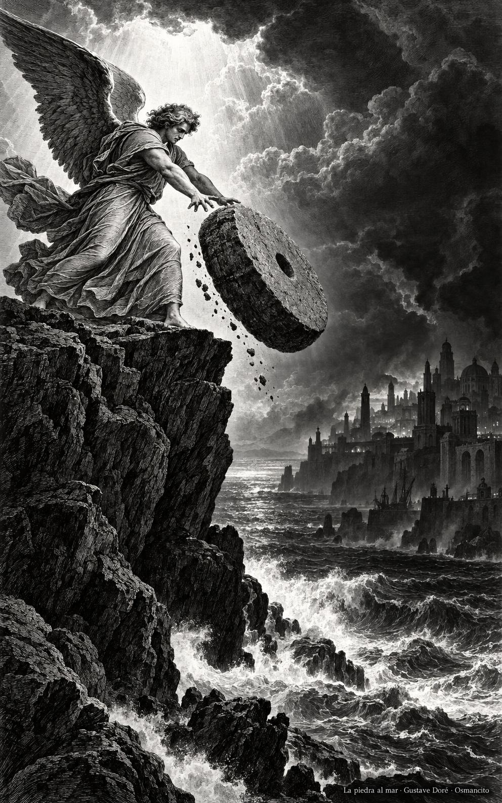
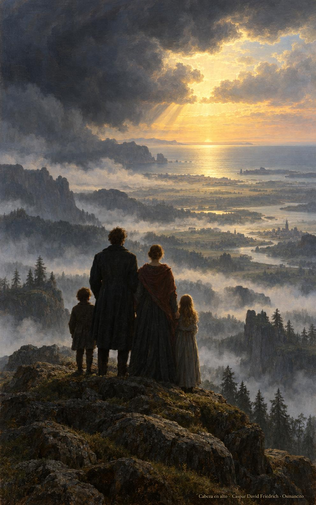

26 de noviembre de 2026
¡Buenos días!
Levanten la cabeza
47
Estén atentos y levanten la cabeza, porque se acerca la hora de su liberación.
Lucas 21,28. Fuente
Que no nos seduzca la ciudad que se cree eterna, con sus comercios y sus luces, porque cae de pronto como piedra en el mar. Que sirvamos con alegría al que nos hizo y entremos por sus puertas dando gracias, pues su misericordia no se acaba. Cuando todo tiemble y las estrellas se bamboleen, que levantemos la cabeza sin miedo, entre cantos de aleluya, invitados dichosos al banquete del Cordero: nuestra liberación ya está cerca.

- El ángel arroja al mar la piedra de molino mientras se apagan las luces de la gran ciudad: Apocalipsis 18, con esta misma violencia será arrojada Babilonia, y la multitud del cielo canta aleluya.

- La familia alza el rostro hacia la luz que rompe la tormenta sobre el valle: Lucas 21, levanten la cabeza, porque se acerca la hora de su liberación.
¡Feliz jueves 26 de noviembre!
😊🙋♂
© 2026 Osmancito